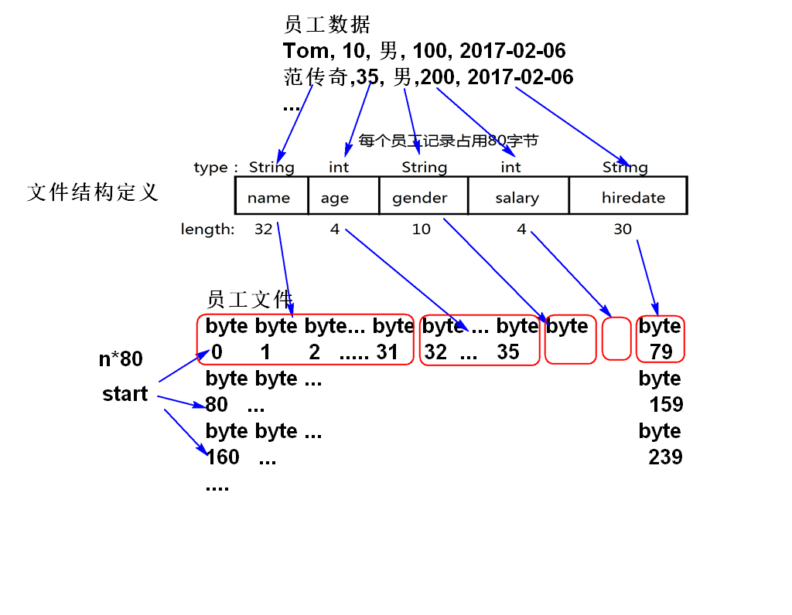
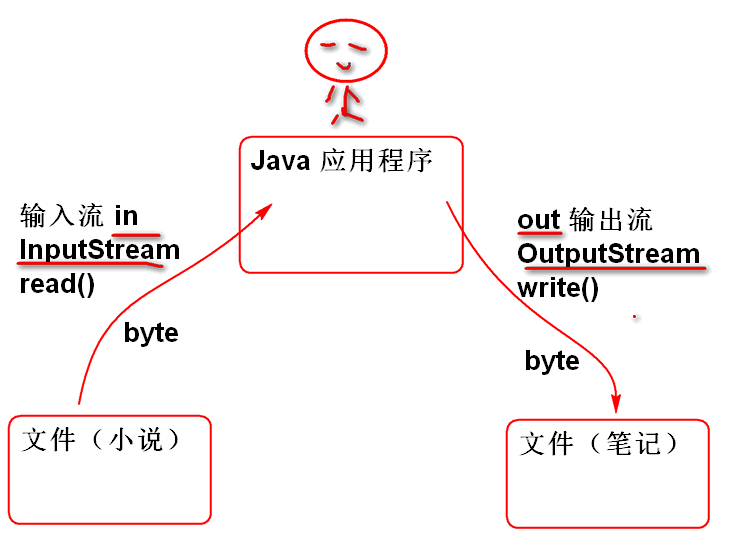

RAF 可以从文件的任何位置开始读写文件，其核心方法是seek(位置)：
案例：
/**
* 随机文件读写
*
*/
public class Demo01 {
public static void main(String[] args)
throws Exception{
String file = "abc/myfile.dat";
RandomAccessFile raf=
new RandomAccessFile(file, "rw");
//将0~255写入到文件 myfile.dat
for(int i=0; i<=255; i++){
raf.write(i);
}
//移动读写位置指针到0
raf.seek(0);//可以在任意位置开始读写
int b;
//经典的模式写法：
while((b=raf.read())!=-1){
System.out.println(b);
}
raf.close();
}
}
注意： 文件读写完毕以后才能raf.close()关闭文件！！
RAF 提供了基本类型的读写方法，基本类型的读写方法的底层是 read() write() 方法。
int 的读写原理:
案例：
/**
* RAF 整数数据读写，其他类型 略
*/
public class Demo02 {
public static void main(String[] args)
throws Exception{
String file = "abc/integer.dat";
RandomAccessFile raf =
new RandomAccessFile(file, "rw");
//将int数据126712 拆分为4个byte写到
//文件中，文件指针连续移动4次
raf.writeInt(126712);
long p = raf.getFilePointer();
System.out.println(p);
raf.seek(0);
//读取一个整数: 连续读取4个byte，拼接
// 为一个int数据, 文件指针连续移动4次
int n = raf.readInt();
p = raf.getFilePointer();
System.out.println(p);//4
System.out.println(n);//126712
raf.close();
}
}
字符串中存储的是char数据，不能直接IO，需要先进行编码，编码为byte数据在进行读写。常见的编码方案是 UTF-8.
在UTF-8 编码中：英文字符1个byte，中文字符3个byte
案例：
/**
* 字符串类型的写出和读取
*/
public class Demo03 {
public static void main(String[] args)
throws Exception{
String file="abc/str.txt";
RandomAccessFile raf =
new RandomAccessFile(file, "rw");
String str = "你好ABC";
//对字符串进行UTF-8编码
byte[] bytes=str.getBytes("UTF-8");
System.out.println(bytes.length);//9
//将文字的编码写入到文件中
raf.write(bytes);//将数组中全部的byte
//数据写入到文件中。
long p = raf.getFilePointer();
System.out.println(p);//9
//从头读取
raf.seek(0);
byte[] buf=new byte[(int)raf.length()];
//read(bytes) 从文件中连续读取byte数据
//将读取结果填充到 byte数组中
raf.read(buf);
//buf 中是按照UTF-8编码的字符数据,解码：
String s = new String(buf, "UTF-8");
System.out.println(s);
raf.close();
}
}
注意：文字信息必须经过编码才能写到文件中。读取文件时候需要进行解码处理。 如果编码和解码的规则不一致就会出现乱码问题！！
将员工信息写到文件中，并且在读取回来：
原理：

写数据案例：
/**
* 写员工信息
*/
public class Demo04 {
public static void main(String[] args)
throws IOException{
String file="abc/emp.dat";
RandomAccessFile raf=
new RandomAccessFile(file, "rw");
write(raf, 0,"Tom", 10, "男", 100, new Date());
write(raf, 1,"范传奇",30,"男",200,new Date());
raf.close();
}
public static void write(
RandomAccessFile raf, //已经打开的文件
int n, //n = 0 1 2 ... 行号
String name,
int age,
String sex,
int salary,
Date hiredate)throws IOException{
int start=n*80;//n=0,0 n=1,80 n=2,160
raf.seek(start);//将文件指针移动到每行起始位置
//将name编码，然后写到文件中
byte[] bytes=name.getBytes("UTF-8");
raf.write(bytes); //3 9 10
//写出age
raf.seek(start+32);//跳到age位置
raf.writeInt(age);//写出年龄
//写出性别
bytes = sex.getBytes("UTF-8");
raf.write(bytes);
//写出薪水
raf.seek(start+46);
raf.writeInt(salary);
//写出日期
SimpleDateFormat fmt =
new SimpleDateFormat("yyyy-MM-dd");
String d = fmt.format(hiredate);
bytes = d.getBytes("UTF-8");
raf.write(bytes);
}
}
读取员工信息：
/**
* 读取员工信息文件
*
*/
public class Demo05 {
public static void main(String[] args)
throws Exception {
String file="abc/emp.dat";
//打开文件 emp.dat
RandomAccessFile raf=
new RandomAccessFile(file, "r");
//读取第一行 （Tom）
Emp e1 = read(raf, 0);
//读取第二行 （范传奇）
Emp e2 = read(raf, 1);
//显示读取结果
System.out.println(e1);
System.out.println(e2);
//关闭文件
raf.close();
}
public static Emp read(
RandomAccessFile raf, int n)
throws Exception {
int start = n*80;//读取的起始位置
raf.seek(start);//找到name的起始位置
byte[] bytes = new byte[32];
raf.read(bytes);//读取32个byte
//bytes=[T,o,m,0,0,0,0,0,...0]
String name=
new String(bytes,"UTF-8").trim();
//读取年龄
int age = raf.readInt();
//读取性别...
bytes = new byte[10];
raf.read(bytes);
String sex=new String(bytes,"UTF-8").trim();
//读取薪水
int salary = raf.readInt();
//读取日期
bytes = new byte[30];
raf.read(bytes);
String str = new String(bytes, "UTF-8").trim();
//解析日期
SimpleDateFormat fmt =
new SimpleDateFormat("yyyy-MM-dd");
Date hiredate=fmt.parse(str);
return new Emp(
name,age,sex,salary,hiredate);
}
}
class Emp{
String name;
int age;
String sex;
int salary;
Date hiredate;
public Emp(String name, int age, String sex, int salary, Date hiredate) {
super();
this.name = name;
this.age = age;
this.sex = sex;
this.salary = salary;
this.hiredate = hiredate;
}
public String toString() {
return "Emp [name=" + name + ", age=" + age + ", sex=" + sex + ", salary=" + salary + ", hiredate=" + hiredate
+ "]";
}
}
RAF 提供了文件随机读写功能，但是没有提供复杂数据的读写功能。 Java 提供了另外一套可以灵活扩展的API： IO流。
IO流在节点流基础之上提供了丰富的的扩展功能，利用这些扩展流可以大大简化IO程序的开发。

IO流按照功能可以分为两大类： 节点流和处理流
节点流是流最原始的数据源，提供流最基本的功能。
也称为高级流，过滤流，处理流是在其他流的基础之上扩展出更高级的功能。处理流的核心特点是必须依赖于另外一个流，自己不能独立功能，处理流是对另外的流进行扩展。
流按照数据流向分为输入流和输入流：

这两个流是抽象类，不能直接使用。在实际工作中使用其实现类
文件输出流节点流，是以文件为目标数据源的节点流，是基本的流，只提供了基本的输出方法write()
案例：
/**
* 使用文件输出节点流写文件
*/
public class Demo06 {
public static void main(String[] args)
throws Exception {
String file="abc/fos.dat";
//利用文件节点流打开一个文件
//当文件不存在时候，会自动创建文件
//文件存在时候将文件替换为新文件
//当文件不能写时候，出现异常
FileOutputStream out =
new FileOutputStream(file);
//测试基本的 byte 数据写出方法
//将byte写到文件中有效范围（0~255）
out.write(65);
out.write(66);
//关闭文件
out.close();
}
}
文件输入节点流，是文件作为数据来源的节点流，也是基础节点流，提供了基本的文件读取功能。
案例：
/**
* 测试 文件输入节点流 的读取文件
*/
public class Demo07 {
public static void main(String[] args)
throws Exception {
String file="abc/fos.dat";
//用文件节点输入流打开文件
//如果文件不能打开或者文件不存在
//就抛出异常！
FileInputStream in =
new FileInputStream(file);
//测试基本的节点流读取方法
//每次从文件中读取一个byte(0~255)
int b1 = in.read();
int b2 = in.read();
System.out.println(b1);
System.out.println(b2);
in.close();
}
}
将文件输入流与文件输出流连接起来，就可以实现文件的复制功能：
/**
* 利用文件流实现文件的复制功能
*
* 在不使用缓冲流的情况下，读写性能很差！
*
*/
public class Demo08 {
public static void main(String[] args)
throws Exception{
//打开原始输入文件
FileInputStream in =
new FileInputStream(
"d:/TETRIS.zip");
//打开目标的输出文件
FileOutputStream out =
new FileOutputStream(
"d:/TETRIS_new.zip");
//从in里读取每个byte写到out流中
int b;
while((b=in.read())!=-1){
//b代表原始文件中的每个byte
out.write(b);
}
//关闭in，out即可
in.close();
out.close();
System.out.println("成功！");
}
}
这个程序性能有瑕疵。
利用缓存读写方法可以提供 文件复制性能：
/**
* 自定义缓存读写
*/
public class Demo09 {
public static void main(String[] args)
throws Exception{
//打开原始输入文件
FileInputStream in =
new FileInputStream(
"d:/TETRIS.zip");
//打开目标的输出文件
FileOutputStream out =
new FileOutputStream(
"d:/TETRIS_new.zip");
byte[] buf=new byte[1024*8];//1K byte
//从输入流in中读取尽可能多的byte填充
//到缓存 buf 中，返回读取个数 1024
//int n = in.read(buf);//1024
//int n = in.read(buf);//1024
//...
//n = in.read(buf); // 1 ~ 1024
//n = in.read(buf); // -1
int n;
while((n = in.read(buf))!=-1){
//将buf中从0开始的连续n个byte
//写到 文件流out中
out.write(buf, 0, n);
}
in.close();
out.close();
System.out.println("OK!");
}
}
为了避免最后一次复制多余的byte必须使用 out.write(buf, 0, n) 方法。
Java提供了使用简便的高级扩展流： 缓冲流
如：
/**
* 利用文件流实现文件的复制功能
*
* 在不使用缓冲流的情况下，读写性能很差！
*
*/
public class Demo08 {
public static void main(String[] args)
throws Exception{
//打开原始输入文件
FileInputStream fis =
new FileInputStream(
"d:/TETRIS.zip");
BufferedInputStream in =
new BufferedInputStream(fis);
//打开目标的输出文件
FileOutputStream fos =
new FileOutputStream(
"d:/TETRIS_new.zip");
BufferedOutputStream out=
new BufferedOutputStream(fos);
//从in里读取每个byte写到out流中
int b;
while((b=in.read())!=-1){
//b代表原始文件中的每个byte
out.write(b);
}
//关闭in，out即可
in.close();
out.close();
System.out.println("成功！");
}
}
可以看到，复制文件的算法没有改变，只是在原有文件流的外部"套上"缓冲流，软件的IO性能就大大加快了。